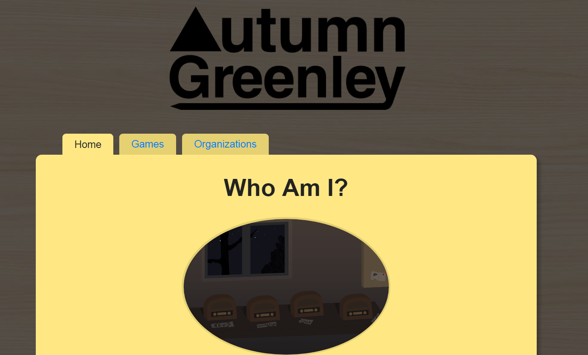

This is a Blog Post for Homework Assignment #1.
This is a Demo for Homework Assignment #1
This is a Repo for Homework Assignment #1
So, the first thing I had to do when starting this assignment was to doublecheck my settings with Git. I had previously had a Git account, so I didn't need to make a new one. I evidently still had the command line version installed, so I went ahead and just jumped right into that.
I was always a little unclear on how to use Git, but listening in in class helped clear stuff up. So I set up the local folder.
cd Documents/HW/Git
git init
git add *
git commit
git push -u origin masterI guess I like doing things the long way, but in the future I should probably just use
git commit -m "This is my commit message"
instead of manually writing it out in vim.
Admittedly, I had a little bit of foolery where I didn't set the folders up right the first time between the local and remote repo, so I ended up having to merge things once or twice. It wasn't too hard to clear up, but I forgot to document exactly what went down. It probably had to do with not pulling the remote repo first so I had some conflicts with the README file.
So, in the future,
git pull
git status
...I made a basic sketch of the sort of page design I was thinking of before looking at the code much. I thought it would be cool to sort of make it look like pages in a manilla folder, but when I started putting it in the computer and adjusting things, I decided that a page on a folder would be kind of busy and overall have too many frames.
Knowing the shape of things, I went ahead and started implementing the basis of it. As most people do (probably), I tend to start with the most notable aspects and work down from there. So I decided to work with the central concept of the base folder bit with the tabs to represent, well, tabs/pages.
I started by making a 'manilla' class in my html. By default, I had every body or whatever that had some sort of background color having a bit of a rounded edge already, since that's modern, but for the tabs I went ahead and made the bottom squared off so it could 'attach' more cleanly. I also messed with the colors a little to give it an illusion of depth.
I also added a basic single column layout with Bootstrap. This is the main page:
<div class="manilla">
<div class="container">
<div class="row">
<div class="col-md-12">
<img class="rounded-circle" src="../images/Screenshot.png" width="350" >
<h2>About Me</h2>
<p>
...
</p>
</div>
</div>
</div>
</div>and this was the navbar. I ended up having two classes (active and not-active, basically) so that the active tab would be displayed differently than the others.
<ul>
<li class="active">Home</li>
<a href="games.html"><li class="navbar">Games</li></a>
<a href="orgs.html"><li class="navbar">Organizations</li></a>
</ul>Most of the heavy lifting was in the css.
div.manilla{
margin-top: 55px;
border-radius: 10px;
box-shadow: 5px 5px 10px rgba(0, 0, 0, 0.26);
background-color: #ffe884;
padding: 30px 30px 30px;
}
li.navbar {
float: left;
display: inline-table;
list-style-type: none;
margin: 5px;
padding: 5px;
padding-left: 20px;
padding-right: 20px;
font-size: 17px;
background-color: #e5d072;
border-top-left-radius: 6px;
border-top-right-radius:6px;
border-style: solid;
border-width: 0px;
border-bottom-width: 1px;
border-bottom-color: #e5d072;
}
li.active {
...
background-color: #ffe884;
...
border-bottom-color: #ffe884;
}Otherwise, I didn't have very many other things to mess with. I filled in the other pages similarly, using little bits and pieces that were required (lists, a table, etc). Some of the more notable things were probably...
I made a table that was semi-responsive (<table class="table-responsive-sm">) so that when the page is narrow it uses a scrollbar instead of just overflowing over the side.
Utilizing Bootstrap, I made a two-columned page (using <div class="col-md-6"> instead of <div class="col-md-12">, bearing in mind that the total number should add up to 12).
Otherwise, everything was just variations on basic HTML and CSS. I did learn a cool trick though vis a vis css backgrounds. I didn't realize there was a built in gradient function for backgrounds (background-image:linear-gradient(to bottom, #e6ffe9, #f7fff8); makes a nice subtle light-green to lighter-green gradient the background, as seen on this page)
In the end, this is what I wound up with:
